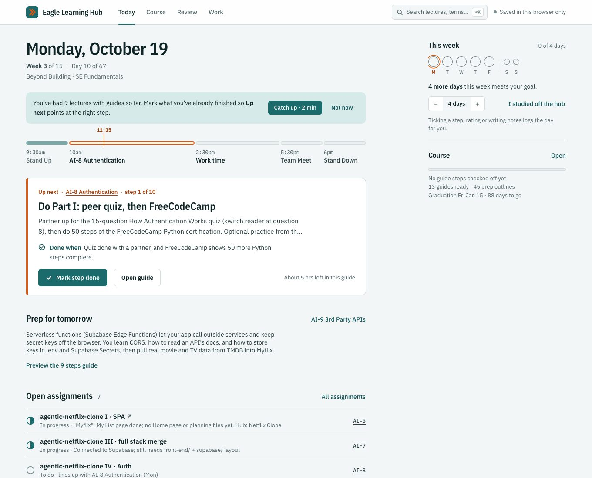

Up next · AI-8 · step 1 of 10
Do Part I: peer quiz, then FreeCodeCamp
Partner up for the 15-question quiz, then do 50 steps of FreeCodeCamp Python.
Mark step doneOpen guide
19 October, 2026
I'm in Code Platoon's 15-week AI and full-stack bootcamp. Every day has Stand Up, a lecture, work time and homework, and the course moves on whether you finished or not.
Between classes, on my phone, I kept asking the same question: what do I do now? So I built a study hub to answer it, then audited it, rebuilt it, and gave it a motion system. I did it solo, in two days.
up next
ʌp ˈnɛkst
noun
The one step to do right now: named plainly, with what done looks like, and finishable right where you see it.
The first version pointed at a lecture. To do anything, I had to open the guide, scroll, and find step 1.
Now Today names the step itself and finishes it in place. The week goal fills in, and Undo is always one tap away.
v1 looked finished, so I had two Claude agents review it the way a stranger would: Nielsen's ten heuristics, eight real tasks, and every claim measured in a browser. It scored 3 out of 5.1
The worst problems were on my phone. Rating and notes sat 8,000px down a 9,000px page, and unticked checkboxes had 1.39:1 contrast. I rebuilt it from that report and ran the same tasks again. It scored 4 out of 5, with a 3,387px page and 3.17:1 checkboxes.


On a phone, the actions now sit in a bar that never scrolls away. Tick a step and a teal line runs down to the next one.
Rate how well you know it, and anything shaky comes back for review on a schedule.
Fifty-eight lectures is a lot of scrolling. ⌘K searches lectures, key terms and assignments.
The palette itself never animates. I open it many times a day, and a fade would only slow me down.
On day one, nine lectures I'd attended showed up in amber as "Not started". The hub didn't exist when I did that work, so it called it failure.
Now each color has one job. Teal means progress, orange means now, and amber is only for real problems. Past work I haven't ticked is just grey.
Every motion answers "what just happened?" Nothing moves for decoration, and all of it turns off when your system asks for reduced motion.2
Every score here comes from my own reviews of an app built for one user: me. Next I'm running the same eight tasks with five classmates, and timing how long it takes them to find what to do now.
A design system came out of this too: 22 components, generated from the shipped code so it can't drift.
The audits came from my ux-auditor agent and the research from my ui-designer agent, both running in Claude Code. I made the decisions and built what shipped. Design references came from Mobbin. Set in IBM Plex.